This platform is designed to serve the requirements of astrophysics research scholars who seek comprehensive understanding of specific subjects. We understand that endless searching and scrolling can be frustrating, so we step in to offer you access to the precise topics you're looking for.


ORBITAL
Open Research Based Impact Tracking for Assessing NASA's Leadership
What is Open Science ?
Open science is the movement to make scientific research an unhindered access transforming its reach to infinite . It empowers the open sharing of data, information, and knowledge within the scientific community and enhances wider public to accelerate scientific research and understandings.
Breakthrough


James Webb Telescope
The James Webb Space Telescope, is an astronomical observatory that represents a significant advancement in our quest to explore the cosmos. Named after James E. Webb ,this cutting-edge telescope is poised to revolutionize our understanding of the universe. Telescope will enhance human eye to dig deep in cosmos , providing first colorful images of universe and tarantula nebula and a clear image of an exoplanet.
MOXIE Mars
The Mars Oxygen In-Situ Resource Utilization Experiment (MOXIE)[1] was a technology demonstration on the NASA Mars 2020 rover investigating the perseverance of oxygen in the copernican atmosphere in partnership with Massachusetts Institute of Technology. The experiment validated itself by fabricating oxygen from the heterogeneous gasses stamping the beginning of human friendly atmosphere.
ARTEMIS II
Artemis 2 is the second mission of Artemis legacy of NASA , restarting human travel outside the blue sphere, first time in ORION spacecraft , outlined to launch in november 24. the 10-day flight will test NASA's foundational human deep space exploration capabilities, the voyage will include 4 passengers including 1 women.
Impact
Challenges
The reluctance to share work flow and the continuing practices and to share data as a research paper
scientist conclude it as a waste of time .
Furthermore , it will take a long haul where for their credits to return in the form of benefits.
This deteriorate their priority to switch to new model of publication.
Futuristic Vision
Increased Collaboration: Open science will encourage greater collaboration among researchers, both within and across disciplines. This collaboration can lead to more innovative and comprehensive solutions to complex problems.
Open Access Publishing: Open access journals and repositories will continue to grow, ensuring that research findings are freely available to the global scientific community and the public. This promotes transparency and equitable access to knowledge.
Resources of Open Source
All the research paper links will shown to you in this section.
About Us
Our team aims to build a platform that can educate students about open science and its impacts in their communities. We believe that by empowering students to use open science, we can help to create a more equitable and sustainable future for everyone.